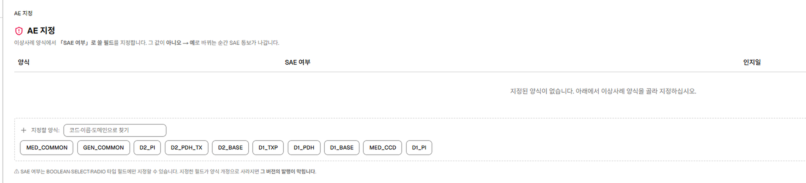
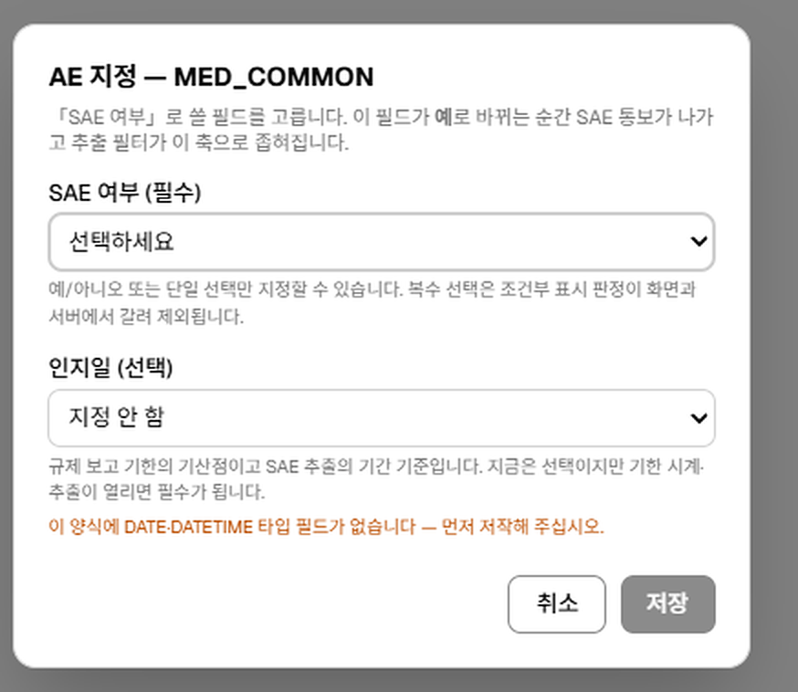
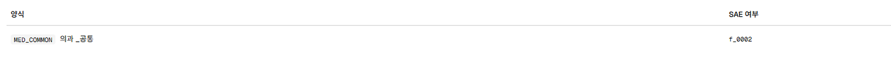
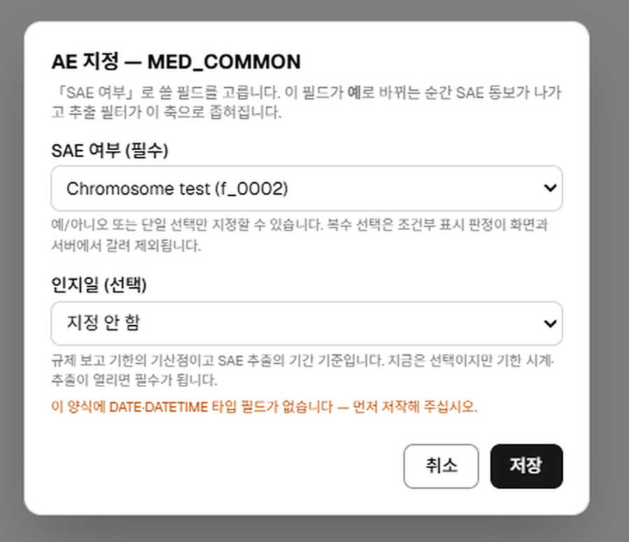
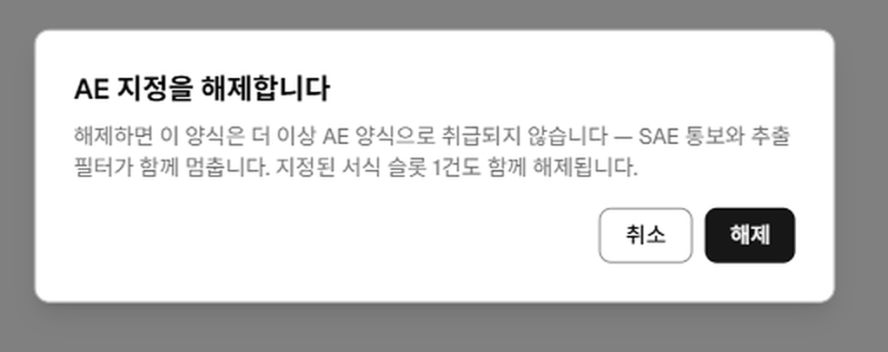
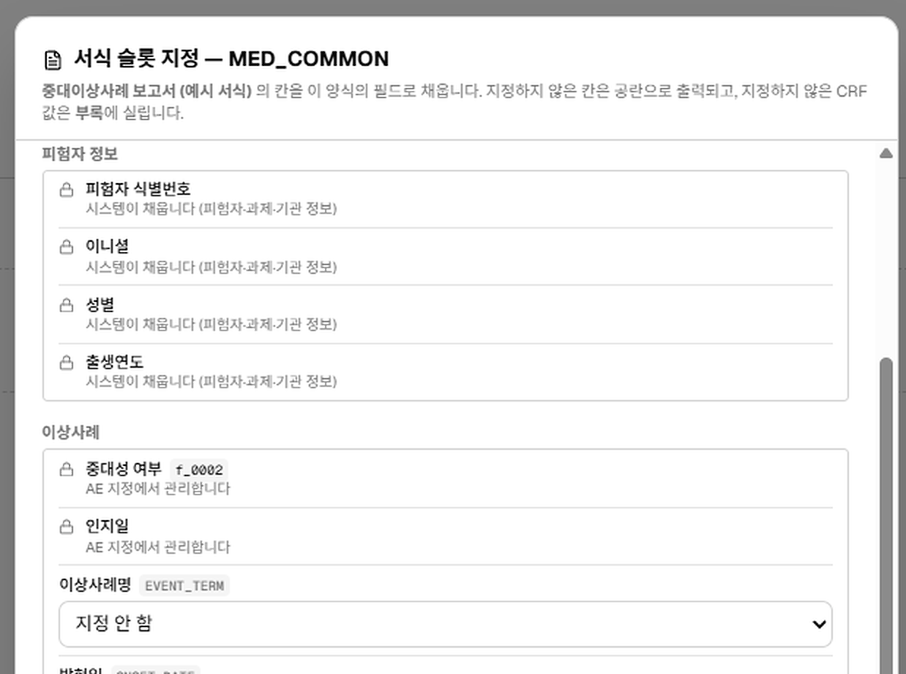
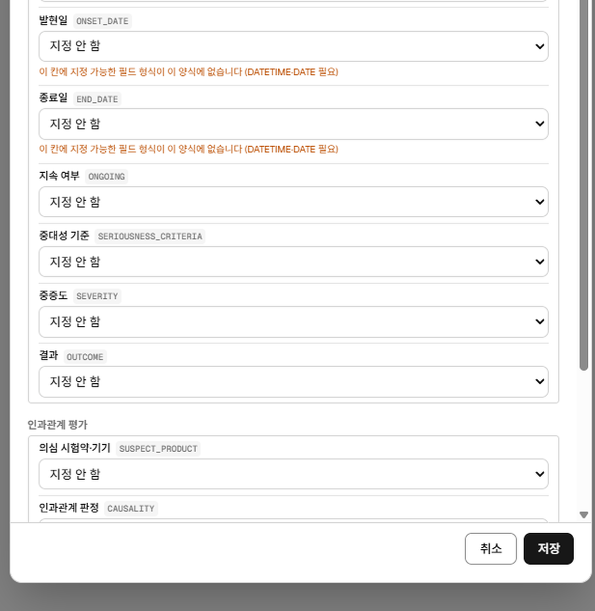
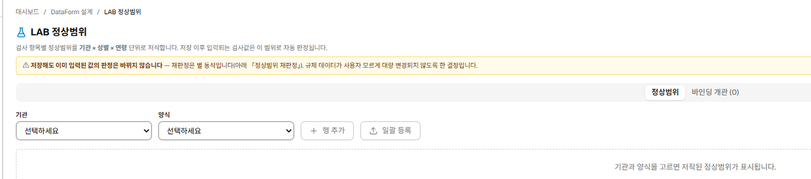

AE 지정 · LAB 정상범위
SAE 여부 지정 · 보고 서식 슬롯 · SCR-CRF-015 정상범위
AE 지정
- 1.1화면 구성
- 1.2SAE 여부 지정
- 1.3지정 결과와 행 액션
- 1.4지정 변경
- 1.5지정 해제
1.1화면 구성
개요
이상사례(AE) 양식에서 어느 필드가 「중대성 여부」인지를 프로젝트 단위로 정해 두는 화면입니다. 여기에서 지정한 필드의 값이 아니오 → 예로 바뀌는 순간 중대이상사례(SAE) 통보가 나갑니다. 지정은 양식 바깥에 있으므로, 양식을 열지 않고도 이 프로젝트에서 어느 양식이 이상사례 양식인지를 한눈에 확인할 수 있습니다.
화면 설명

검색 — 코드 · 이름 · 도메인으로 양식을 찾습니다.
양식 칩 목록 — 아직 지정하지 않은 양식입니다. 선택하면 지정 창이 열립니다 1.2. 지정을 마친 양식은 이 목록에서 빠지고 위 표로 올라갑니다.
이동 경로는 왼쪽 메뉴 연구 관리 > AE 지정 입니다. CRF 관리 바로 아래에 있습니다.
제목 아래 안내가 이 화면의 전부를 요약합니다 — “이상사례 양식에서 「SAE 여부」 로 쓸 필드를 지정합니다. 그 값이 아니오 → 예로 바뀌는 순간 SAE 통보가 나갑니다.”
양식 · SAE 여부 열 — 지정한 양식과 그 양식에서 고른 필드입니다.
지정이 없으면 “지정된 양식이 없습니다. 아래에서 이상사례 양식을 골라 지정하십시오.” 로 비어 있습니다.
화면 하단 경고 — “SAE 여부는 BOOLEAN·SELECT·RADIO 타입 필드에만 지정할 수 있습니다. 지정한 필드가 양식 개정으로 사라지면 그 버전의 발행이 막힙니다.” 이 분권에서 가장 중요한 한 줄입니다 (아래 유의사항 참조).
인지일 열 — 규제 보고 기한의 기산점입니다. 선택 항목이라 비워 둘 수 있습니다 1.2.
유의사항
필수 확인 데이터 손상 · 폼 완료 불가
- • 지정한 필드를 양식에서 지우면 그 버전을 발행할 수 없게 됩니다. 지정은 이 화면에 있고 필드는 CRF 관리의 양식 편집에 있어, 원인과 증상이 서로 다른 화면에서 일어납니다. 양식에서 필드를 지우기 전에 여기에 그 필드가 지정되어 있는지 먼저 확인하십시오.
1.2SAE 여부 지정
개요
목록에서 양식을 선택하면 열리는 창입니다. 정할 것은 두 가지뿐입니다 — 중대성 여부로 쓸 필드(필수)와 인지일로 쓸 필드(선택)입니다. 후보 목록에는 쓸 수 있는 타입의 필드만 나타납니다 — 쓸 수 없는 것을 고르고 나서 막히는 대신 애초에 고를 수 없게 해 둔 것입니다.
화면 설명

SAE 여부 (필수) — 중대성 여부로 쓸 필드를 고릅니다. 예/아니오 또는 단일 선택 타입만 후보에 나타납니다.
인지일 (선택) — 규제 보고 기한의 기산점으로 쓸 날짜 필드를 고릅니다. 날짜 또는 날짜+시간 타입만 후보에 나타납니다.
저장 — 지정을 적용합니다. 저장하면 창이 닫히고 위 표에 행이 생깁니다 1.3.
창 제목에 대상 양식 코드가 함께 표시됩니다 — 다른 양식을 열지 않았는지 여기에서 확인하십시오.
후보 제한 안내 — “예/아니오 또는 단일 선택만 지정할 수 있습니다. 복수 선택은 조건부 표시 판정이 화면과 서버에서 갈려 제외됩니다.”
인지일 안내 — “규제 보고 기한의 기산점이고 SAE 추출의 기간 기준입니다. 지금은 선택이지만 기한 시계·추출이 열리면 필수가 됩니다.”
빨간 안내 — “이 양식에 DATE·DATETIME 타입 필드가 없습니다 — 먼저 저작해 주십시오.” 오류가 아니라 고지입니다. 인지일로 쓸 날짜 필드를 양식에 먼저 만들어야 고를 수 있습니다.
취소 — 지정하지 않고 창을 닫습니다.
유의사항
오해하기 쉬운 동작
- • 인지일은 지금은 선택이지만 비워 두지 마십시오. 규제 보고 기한을 세는 시계가 그 날짜에서 시작하고, 중대이상사례 추출의 기간 기준도 같은 값입니다. 화면 안내가 기한 시계와 추출이 열리면 필수가 된다고 미리 알리고 있으므로, 날짜 필드가 없다면 양식에 먼저 만들어 두는 편이 낫습니다.
1.3지정 결과와 행 액션
개요
저장하면 창이 닫히고 표에 행이 생깁니다. 아래 칩 목록에서는 그 양식이 빠지므로, 표에 있으면 지정된 것이고 아래에 있으면 지정되지 않은 것입니다. 행 오른쪽 끝에는 변경 · 서식 슬롯 · 해제 세 가지 액션이 있습니다.
화면 설명


변경 — 지정한 필드를 바꿉니다 1.4.
서식 슬롯 — 중대이상사례 보고서 서식의 어느 칸을 이 양식의 어느 필드가 채울지 정합니다 2.1.
휴지통 — 지정을 해제합니다 1.5.
양식 열 — 양식 코드와 이름입니다.
SAE 여부 열 — 고른 필드의 키가 표시됩니다. 표시명이 아니라 필드 키입니다.
인지일 열 — 지정하지 않으면 – 로 남습니다.
유의사항
오해하기 쉬운 동작
- • 한 양식에는 지정이 하나뿐입니다. 같은 양식을 다시 지정할 수는 없고, 필드를 바꾸려면 변경을 사용합니다. 아래 칩 목록에서 그 양식이 사라진 것이 이미 지정되었다는 표시입니다.
1.4지정 변경
개요
행의 변경을 선택하면 지정할 때와 같은 창이 열립니다. 다른 점은 지금 지정된 값이 미리 채워져 있다는 것뿐입니다. 필드를 바꾸고 저장하면 그 시점부터 새 필드가 중대성 여부로 동작합니다.
화면 설명

SAE 여부 — 다른 필드로 바꿉니다. 후보 제한은 지정할 때와 같습니다 1.2.
저장 — 변경을 적용합니다.
현재 지정된 필드가 표시명 (필드 키) 형태로 채워져 있습니다.
인지일 도 현재 값이 채워진 채 열립니다 — 지금은 지정 안 함 입니다.
빨간 안내가 그대로 남아 있습니다 — 이 양식에는 아직 날짜 필드가 없습니다.
창 제목의 양식 코드로 어느 행을 고치는지 확인합니다.
취소 — 바꾸지 않고 창을 닫습니다.
유의사항
오해하기 쉬운 동작
- • 인지일 칸을 건드리지 않아도 창에 보이는 값 그대로 저장됩니다. 이 창은 두 칸을 항상 함께 저장하므로, 현재 값이 채워진 채 열리는 것이 그 때문입니다. 인지일을 지우려면 지정 안 함으로 바꿔 저장하십시오.
1.5지정 해제
개요
행의 휴지통을 선택하면 확인 창이 열립니다. 해제하면 그 양식은 더 이상 이상사례 양식으로 다루어지지 않습니다 — 중대이상사례 통보와 추출 필터가 함께 멈추고, 그 양식에 지정해 둔 보고 서식 슬롯도 함께 해제됩니다.
화면 설명

해제 — 지정을 거둡니다. 그 양식은 아래 칩 목록으로 돌아갑니다.
창 제목 — AE 지정을 해제합니다.
본문이 영향 범위를 미리 알려 줍니다 — “해제하면 이 양식은 더 이상 AE 양식으로 취급되지 않습니다 — SAE 통보와 추출 필터가 함께 멈춥니다. 지정된 서식 슬롯 N건도 함께 해제됩니다.” 건수가 숫자로 표시되므로 잃는 것이 얼마나 되는지 확인하고 결정하십시오.
취소 — 해제하지 않고 창을 닫습니다.
유의사항
필수 확인 데이터 손상 · 폼 완료 불가
- • 해제하면 보고 서식 슬롯이 함께 사라집니다. 서식 슬롯은 AE 지정에 딸린 설정이라 지정이 없어지면 함께 지워지며, 되돌리려면 처음부터 다시 지정해야 합니다. 필드만 바꾸려는 것이라면 해제가 아니라 변경을 사용하십시오 1.4.
SAE 보고 서식 슬롯
- 2.1슬롯 지정 구성
- 2.2중대성과 중증도
2.1슬롯 지정 구성
개요
중대이상사례가 발생하면 규제 기관에 정해진 서식으로 보고해야 합니다. 이 창은 그 서식의 각 칸을 이 양식의 어느 필드가 채울지를 미리 짝지어 두는 곳입니다. 짝지어 두면 보고서가 자동으로 채워지고, 지정하지 않은 칸은 공란으로 출력됩니다. 칸은 성격에 따라 고칠 수 없는 칸과 고르는 칸으로 나뉩니다.
화면 설명

고르는 칸 — 이 양식의 필드 중에서 고릅니다. 칸마다 쓸 수 있는 타입이 정해져 있어 후보가 걸러집니다.
창 머리의 안내 — “중대이상사례 보고서 (예시 서식) 의 칸을 이 양식의 필드로 채웁니다. 지정하지 않은 칸은 공란으로 출력되고, 지정하지 않은 CRF 값은 부록에 실립니다.”
피험자 정보 섹션 — 서식의 묶음 그대로 나뉘어 있습니다.
자물쇠가 붙은 칸은 고를 수 없습니다 — “시스템이 채웁니다 (피험자·과제·기관 정보)”. 피험자 식별번호 · 이니셜 · 성별 · 출생연도가 여기에 해당합니다.
이상사례 섹션 — 사건 자체를 기술하는 칸들입니다.
중대성 여부 는 자물쇠 + “AE 지정에서 관리합니다” 입니다. 1장에서 지정한 그 필드가 여기에 자동으로 들어옵니다.
인지일 도 같습니다 — AE 지정에서 고른 값이 그대로 쓰입니다. 두 칸이 1장과 2장을 잇는 고리입니다.
유의사항
오해하기 쉬운 동작
- • 건드리지 않은 칸도 저장할 때 그대로 유지됩니다. 이 창은 모든 칸을 현재 값으로 채워 열고 저장 시 통째로 다시 싣기 때문입니다. 다만 그 구조 탓에 창을 열어 둔 사이 다른 사람이 바꾼 내용은 덮어씁니다 — 여러 사람이 같은 양식을 만지는 중이라면 저장 전에 한 번 더 확인하십시오.
2.2중대성과 중증도
개요
창을 내리면 중대성 기준과 중증도 칸이 나란히 나옵니다. 이름이 비슷해 한 덩어리로 읽히기 쉽지만 규제 보고 대상을 가르는 축이 서로 다릅니다. 중대성은 사망 · 입원 · 생명 위협 같은 결과를 묻고, 중증도는 경증 · 중등증 · 중증 같은 강도를 묻습니다. 보고 의무를 정하는 것은 중대성 쪽입니다.
화면 설명

중대성 기준 — 어떤 이유로 중대한가를 담는 칸입니다. 사망 · 입원 · 생명 위협 등의 코드가 들어가며, 중대성 여부와 반드시 함께 두어야 합니다.
중증도 — 증상이 얼마나 강한가를 담는 칸입니다. 경증 · 중등증 · 중증(또는 CTCAE 등급)이며 보고 의무와는 무관합니다.
저장 — 지정을 적용합니다.
빨간 안내 — “이 칸에 지정 가능한 필드 형식이 이 양식에 없습니다 (DATETIME·DATE 필요)”. 발현일 · 종료일처럼 날짜가 필요한 칸에서 나타나며, 양식에 그 타입의 필드를 먼저 만들어야 고를 수 있습니다.
지속 여부 — 사건이 아직 진행 중인지입니다.
결과 — 회복 · 후유증 · 사망 등 사건의 귀결입니다.
인과관계 평가 섹션 — 시험약과의 관련성을 다룹니다.
의심 시험약·기기 — 어떤 제품이 의심되는지입니다.
취소 — 지정하지 않고 창을 닫습니다.
두 축을 가르는 기준
| 중대성 (seriousness) | 중증도 (severity) | |
|---|---|---|
| 묻는 것 | 결과가 얼마나 심각한가 | 증상이 얼마나 강한가 |
| 값의 예 | 사망 · 입원 · 생명 위협 · 장애 | 경증 · 중등증 · 중증 (CTCAE 등급) |
| 보고 의무 | 이 축이 SAE 보고 여부를 정한다 | 무관 |
| 서식 칸 | 중대성 여부 · 중대성 기준 | 중증도 |
| 헷갈리는 예 | Mild 한 입원 → 중대사례다 | Severe 한 두통 → 중대사례가 아니다 |
유의사항
필수 확인 데이터 손상 · 폼 완료 불가
- • ⛔ 두 칸을 바꿔 지정해도 시스템은 막지 않습니다. 저장도 되고 양식 발행도 통과합니다 — 이 자리를 검사하는 서버 규칙이 없습니다. 바꿔 지정하면 보고해야 할 사례가 보고되지 않거나 보고하지 않아도 될 사례가 보고됩니다. 저장하기 전에 중대성 기준 칸에 결과 코드가, 중증도 칸에 강도 등급이 들어갔는지 사람이 직접 확인하십시오.
LAB 정상범위
- 3.1화면 구성
3.1화면 구성
개요
검사 항목의 정상범위를 저작하는 화면입니다. 범위는 기관 × 성별 × 연령 단위로 나누어 적으며, 저장한 뒤 입력되는 검사값은 이 범위와 비교해 정상 · 낮음 · 높음이 자동으로 판정됩니다. 같은 검사라도 기관마다 기준이 다른 것이 정상이므로 기관을 먼저 고르고 시작합니다.
화면 설명

기관 — 범위를 적을 참여 기관을 고릅니다. 담당 기관이 정해진 역할에게는 자기 기관만 열립니다.
양식 — 검사 항목이 들어 있는 CRF 를 고릅니다. 기관과 양식을 모두 골라야 아래에 표가 나타납니다.
+ 행 추가 — 범위를 한 줄씩 직접 적습니다.
⬆ 일괄 등록 — 여러 줄을 한 번에 올립니다. 기존 행을 지우지 않고 덮어쓰거나 추가합니다 (아래 유의사항 참조).
이동 경로는 대시보드 / DataForm 설계 / LAB 정상범위 입니다. 왼쪽 메뉴에서는 연구 관리 > LAB 정상범위 입니다.
제목 아래 안내 — “검사 항목별 정상범위를 기관 × 성별 × 연령 단위로 저작합니다. 저장 이후 입력되는 검사값은 이 범위로 자동 판정됩니다.”
노란 배너 — “저장해도 이미 입력된 값의 판정은 바뀌지 않습니다 — 재판정은 별 동작입니다.” 이 화면에서 가장 중요한 한 줄입니다 (아래 유의사항 참조).
정상범위 · 바인딩 개관 탭 — 뒤쪽 탭은 이 프로젝트에서 어느 검사 항목이 판정 대상으로 지정되어 있는지를 모아 봅니다. 괄호 안이 그 건수입니다.
기관과 양식을 고르기 전에는 “기관과 양식을 고르면 저작된 정상범위가 표시됩니다.” 로 비어 있습니다.
이 화면에서 반드시 기억할 세 가지
- • 저장해도 기존 판정은 바뀌지 않습니다 — 이미 입력된 값을 다시 판정하려면 별도의 재판정을 실행해야 합니다. 규제 자료가 사용자 모르게 대량으로 바뀌지 않도록 한 결정입니다
- • 연령 구간을 다 채우지 않아도 됩니다 — 성인 범위만 먼저 적는 부분 저작이 정상 운영입니다. 비어 있는 나이대는 오류가 아니라 그 구간은 판정을 건너뛴다는 뜻입니다
- • 일괄 등록은 덮어쓰기이지 교체가 아닙니다 — 올린 파일에 없는 행은 지워지지 않고 그대로 남습니다. 전부 새로 만들려면 기존 행을 먼저 지우십시오
유의사항
필수 확인 데이터 손상 · 폼 완료 불가
- • 범위를 고쳐도 이미 판정된 값은 그대로입니다. 저장 직후 화면의 기존 데이터를 보고 “반영되지 않았다” 고 판단하기 쉬우나 정상 동작입니다. 과거 값까지 다시 판정하려면 정상범위 재판정을 따로 실행하십시오 — 그때 무엇이 바뀌는지 확인하고 실행하는 것이 안전합니다.